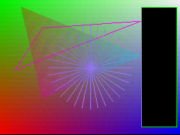
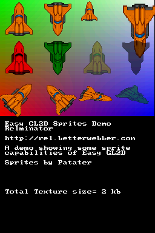
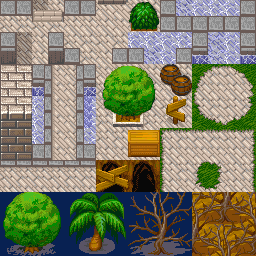
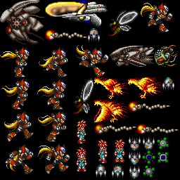
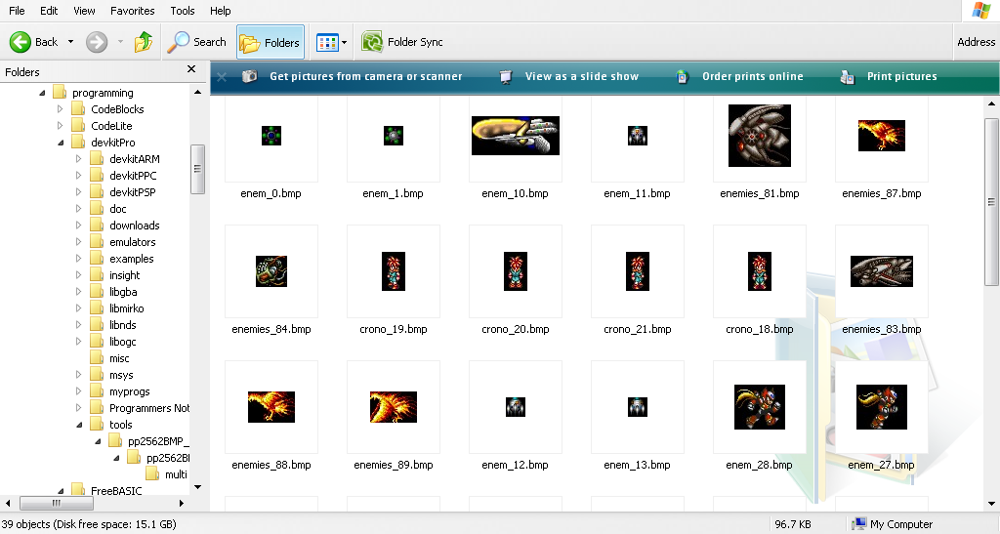
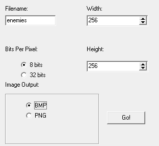
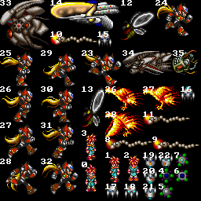
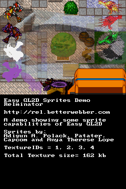

Easy GL2D DS
User's Guide
Official Site
Http://Rel.Phatcode.Net
Email
vic_viperph(at)yahoo.com
Introduction
Easy
GL2D is a very small, very fast, yet easy to use hardware abstraction
layer for 2D graphics rendering. Easy GL2D uses the DS' 3D
hardware to render in 2D mode.
Reasons to use Easy GL2D:
- Works perfectly on a real DS
- Library size is very small (less than 10 kb)
- Very fast
- Can render more sprites than you can handle as opposed to the OAM's 128 sprites limit.
- Easy to maintain and refactor existing code
- Abstracted interface
- Code is easily portable to other platforms
- Can combine 2D and 3D seamlessly
- Almost unlimited palette usage in a single frame
- Can handle non-power of 2 sprites
- 3 types of translucency (2 via textures and 1 via polygon format)
- Lots of sprite effects (colors, alpha, rotation, scaling, shearing, etc.)
- Optimum VRAM use
- Paletted(almost limitless) and high-color mode can be used together.
- Can be used alongside existing libnds OpenGL functions seamlessly.
Limitations:
- Emulators are slower in emulating the 3d hardware than the OAM.
- glPutPixel, glLine and glBox only works on a real DS and No$GBA and not on deSmuMe.
- You
still have to learn how to use the sub OAM and sub BG since this lib is
main engine only. You can use the video capture to render on both
screens but that would limit your FPS and would use valuable VRAM.
Installation:
1 . Copy the distributable/libnds folder to your devkitPro directory.
or you can copy the /include and /lib folders under the /libnds directory of devkitPro.
ie.
*Assuming you installed devkitPro in c:/devkitPro/
c:/devkitPro/libnds/include/gl2d.h
c:/devkitPro/libnds/lib/libgl2d.a
2. Edit this line in your makefile and add gl2d before libnds
ie.
LIBS := -lnds9
to
LIBS := -lgl2d -lnds9
4. Add #include <gl2d.h> to your source.
5. Done! You can now use Easy GL2D.
Getting Started
Notice:
- All the examples (source, images and binaries) can be found on the /docs/examples folder.
- glColorTable() has been deprecated since the release of libnds 1.5.0.
Because of the it, stencil effects are not possible w/o some hacks so
I just disabled it altogether. However, rendering sprites in any palette
is a lot easier now since palettes are automatically managed by libnds. - You also need to tell libnds what VRAM bank you want allocate for
texture palettes. See the example files.
- There is also a zip file that contains all the examples for the lazy here: All Doc Examples
Easy
GL2D DS is always qualified with the word "easy" because it is
extremely easy to use it hurts. Anybody who have used the OAM to render
their sprites knows all too well how cumbersome it is to manage.
Plus the fact that your limited to just 128 sprites per frame
means bullet-hell games cannot be made using the OAM as a rendering
context. Bullet-Hell is my middle name.
Assuming you have successfully installed Easy GL2D, a minimal easy GL2D application should look like this:
#include <nds.h>
#include <gl2d.h>
int main( void )
{
// Set it to my favorite mode (Any mode that supports 3D should work)
videoSetMode( MODE_5_3D );
// Initialize GL2D
glScreen2D();
while( 1 )
{
// set up GL2D for 2d mode
glBegin2D();
// call Easy GL2D's 2D rendering functions here
// end 2D rendering mode
glEnd2D();
glFlush(0);
swiWaitForVBlank();
}
}
The
above code shows how easy it is to use Easy GL2D. First thing to
do is set a video mode that supports 3D, initialize GL2D and call
your 2D code in between glBegin2D() and glEnd2D(). What
could be easier than that?
Rendering Primitives
Easy GL2D supports redering some of the most basic 2D primitives. They are listed below:
* See the Easy GL2D Programmer'sRreference for more details...
void glPutPixel( int x, int y, int color );
void glLine( int x1, int y1, int x2, int y2, int color );
void glBox( int x1, int y1, int x2, int y2, int color );
void glBoxFilled( int x1, int y1, int x2, int y2, int color );
void glBoxFilledGradient( int x1, int y1, int x2, int y2,
int color1, int color2, int color3, int
color4
);
void glTriangle( int x1, int y1, int x2, int y2, int x3, int y3, int color );
void glTriangleFilled( int x1, int y1, int x2, int y2, int x3, int y3, int color );
void glTriangleFilledGradient( int x1, int y1, int x2, int y2, int x3, int y3,
int color1,
int color2, int color3
);
You can use direct scalar values to pass colors or use libnds' internal macros RGB15() and ARGB16().
Here's an example that draws some of the above primitives...
#include <nds.h>
#include <stdio.h>
#include <gl2d.h>
// Binary Radian PI cosLerp() and sinLerp()
// Expects to be used
#define BRAD_PI (1 << 14)
int main( void )
{
// Set it to my favorite mode (Any mode that supports 3D should work)
videoSetMode( MODE_5_3D );
// Initialize GL2D
glScreen2D();
while( 1 )
{
// set up GL2D for 2d mode
glBegin2D();
// call Easy GL2D's 2D rendering functions here
// Draw some primitives
// fill the whole screen with a gradient box
glBoxFilledGradient( 0, 0, 255, 191,
RGB15( 0, 31,
0 ),
RGB15( 31, 0, 0 ),
RGB15( 0, 0,
31 ),
RGB15( 31, 31, 31 )
);
// draw a black box on the right
glBoxFilled( 200, 10,
250, 180,
RGB15(0,0,0)
);
// draw a border around the black box
glBox( 200, 10,
250, 180,
RGB15(0,31,0)
);
// draw a triangle
glTriangle( 20, 100,
200, 30,
60, 40,
RGB15(31,0,31)
);
// Draw some lines from the center
// with a radius of 20
int i;
int radius = 60;
for( i = 0; i < BRAD_PI * 2; i += 1024 )
{
int x = cosLerp(i) * radius;
int y = sinLerp(i) * radius;
// since sinLerp and cosLerp returns
// a 20.12 fixed point value
// we need to convert the results back
// to standard integers
x = f32toint(x); // same as x >> 12
y = f32toint(y);
// draw the lines radiating from the center
glLine( 128, 96, 128 + x, 96 + y, RGB15(20,15,31) );
}
// draw a gradient triangle in
// translucent mode with
// Poly ID 1
// POLY_ALPHA(16) controls how translucent
// the current polygon is. 8/31
glPolyFmt(POLY_ALPHA(8) | POLY_CULL_NONE | POLY_ID(1));
glTriangleFilledGradient( 30, 10,
200, 80,
60, 140,
RGB15(31,0,0),
RGB15(0,31,31),
RGB15(31,0,31)
);
// end 2D rendering mode
glEnd2D();
glFlush(0);
swiWaitForVBlank();
}
}
Screenshot:

The above shows how to draw some primitives. It also shows how to do translucency on a per-polygon basis.
Sprites
Easy GL2D supports a plethora of sprite rendering and loading functions:
* See the Easy GL2D Programmer'sRreference for more details...
Rendering Functions:
void glSprite( int x, int y, int flipmode, const glImage *spr );
void glSpriteScale( int x, int y, s32 scale, int flipmode, const glImage *spr );
void glSpriteScaleXY( int x, int y, s32 scaleX, s32 scaleY, int flipmode, const glImage *spr );
void glSpriteRotate( int x, int y, s32 angle, int flipmode, const glImage *spr );
void glSpriteRotateScale( int x, int y, s32 angle, s32 scale, int flipmode, const glImage *spr);
void glSpriteRotateScaleXY( int x, int y, s32 angle, s32 scaleX, s32 scaleY, int flipmode, const glImage *spr);
void glSpriteStretchHorizontal(int x, int y, int length_x, const glImage *spr );
void glSpriteOnQuad( int x1, int y1,
int x2, int y2,
int x3, int y3,
int x4, int y4,
int flipmode, const glImage *spr
);
Loading Functions:
int glLoadSpriteSet( glImage *sprite,
const unsigned int numframes,
const unsigned int *texcoords,
GL_TEXTURE_TYPE_ENUM type,
int
sizeX,
int
sizeY,
int
param,
const
uint8
*texture
);
int glLoadTileSet( glImage *sprite,
int
tile_wid,
int
tile_hei,
int
bmp_wid,
int
bmp_hei,
GL_TEXTURE_TYPE_ENUM type,
int
sizeX,
int
sizeY,
int
param,
const
uint8
*texture
);
Sprites
are the bread an butter of just about every DS game. With Easy
GL2D, blitting sprites on screen is as easy as drawing primitives. Let
me give you a very simple example.
I'm gonna use Patater's shuttle sprite in this example.
Here's the shuttle.grit file expected by GRIT.
# Set the warning/log level to 3
-W3
#bitmap mode
-gb
# Set the bit depth to 4 (16 colors)
-gB4
#include pal
-p
- We should always use "-gb" for bitmap modes (never use tile modes) in Easy GL2D.
- The sprite is 16 color so we set the bitdepth to "gB4".
- We include the palette with the "-p" switch (not needed since it is the default).
shuttle.bmp specifications:
Bitdepth = 4 bits per pixel (16 colors)
Width = 64 pixels
Height = 64 Pixels
* We put the files shuttle.bmp and shuttle.grit inside the /gfx folder
Fire up Programmer's Notepad(or any editor of your choice) and start typing this:
/******************************************************************************
*******************************************************************************
Easy GL2D
Sprites example
Shows a some sprite capabilities of easy GL2D
Relminator (Richard Eric M. Lope BSN RN)
Http://Rel.Phatcode.Net
Thanks to:
Patater (Jaeden Amero) for the shuttle sprites
*******************************************************************************
******************************************************************************/
#include <nds.h>
#include <stdio.h>
#include <gl2d.h>
// GRIT auto-generated header
// can be found inside the /build directory
#include "shuttle.h"
int main( void )
{
// Instantiate a glImage object
glImage Shuttle[1]; // only a single sprite for now
// Set it to my favorite mode (Any mode that supports 3D should work)
videoSetMode( MODE_5_3D );
// Init console so that we could
// print some stuff
consoleDemoInit();
// Set up enough texture memory for our textures
// Bank A is 128kb. (enough for our needs)
// since the sprite we're using is just
// 2 kb
vramSetBankA( VRAM_A_TEXTURE );
// Very important or you'll get black textures
vramSetBankE(VRAM_E_TEX_PALETTE); // Allocate VRAM bank for all the palettes
// Initialize GL2D
glScreen2D();
// load our single image
// sprite.
// Note that glLoadTileset can also
// load single images.
glLoadTileSet( Shuttle, // pointer to glImage array
64,
// sprite width
64,
// sprite height
64,
// bitmap image width
64,
// bitmap image height
GL_RGB16, //
texture type for glTexImage2D() in videoGL.h 16 colors
TEXTURE_SIZE_64, // sizeX for
glTexImage2D() in videoGL.h
TEXTURE_SIZE_64, // sizeY for
glTexImage2D() in videoGL.h
// Set texture params
setting color 0 as transparent
GL_TEXTURE_WRAP_S|GL_TEXTURE_WRAP_T|TEXGEN_OFF|GL_TEXTURE_COLOR0_TRANSPARENT,
256,
//
Length of the palette to use (256 colors)
(u16*)shuttlePal, // Load our 16
color shuttle palette
(u8*)shuttleBitmap // image data generated by
GRIT
);
// print some stuff
iprintf("\x1b[1;1HEasy GL2D Sprites Demo");
iprintf("\x1b[2;1HRelminator");
iprintf("\x1b[4;1HHttp://Rel.Phatcode.Net");
iprintf("\x1b[6;1HA demo showing some sprite");
iprintf("\x1b[7;1Hcapabilities of Easy GL2D");
iprintf("\x1b[ 9;1HSprites by Patater");
// calculate the amount of
// memory uploaded to VRAM in KB
int TextureSize = shuttleBitmapLen;
iprintf("\x1b[15;1HTotal Texture size= %i kb", TextureSize / 1024);
int frame = 0;
while( 1 )
{
frame++;
// set up GL2D for 2d mode
glBegin2D();
// call Easy GL2D's 2D rendering functions here
// Draw some primitives
// fill the whole screen with a gradient box
glBoxFilledGradient( 0, 0, 255, 191,
RGB15( 0, 31, 0 ),
RGB15( 31, 0, 0 ),
RGB15( 0, 0, 31 ),
RGB15( 31, 31, 31 )
);
// draw a row of sprites in different flipping
// modes
glSprite( 64* 0, 0, GL_FLIP_NONE, Shuttle );
glSprite( 64* 1, 0, GL_FLIP_V, Shuttle );
glSpriteScale( 64* 2, 0, floattof32(0.6),GL_FLIP_H, Shuttle );
glSpriteScaleXY( 64* 3, 0,
floattof32(1.2), floattof32(1.6), GL_FLIP_V | GL_FLIP_H, Shuttle );
// draw a row of sprites in colored modes
glColor( RGB15(31,0,0) );
glSprite( 64* 0, 64, GL_FLIP_NONE, Shuttle );
glColor( RGB15(0,31,0) );
glSprite( 64* 1, 64, GL_FLIP_V, Shuttle );
// make the last two sprites translucent
// giving them a unique Polygon ID for translucency
// to work.
glPolyFmt(POLY_ALPHA(16) | POLY_CULL_NONE | POLY_ID(1));
glColor( RGB15(16,31,0) );
glSprite( 64* 2, 64, GL_FLIP_H, Shuttle );
glColor( RGB15(0,0,0) );
glSprite( 64* 3, 64, GL_FLIP_V | GL_FLIP_H, Shuttle );
// Go back to normal mode
// POLY_ALPHA(31) is none translucent
// Again, give it another poly ID
glPolyFmt(POLY_ALPHA(31) | POLY_CULL_NONE | POLY_ID(2));
// Also restore color to normal
glColor( RGB15(31,31,31) );
glSpriteRotate( 64 * 0 +
32, 128 + 32, frame * 40, GL_FLIP_NONE, Shuttle );
// Scale by Sinlerp
int scale = sinLerp(frame*60);
glSpriteRotateScale( 64 * 1
+ 32, 128 + 32, -frame * 40, scale, GL_FLIP_NONE, Shuttle );
// Independently scale the 3rd image
int scaleX = sinLerp(frame*90);
int scaleY = sinLerp(frame*30);
glSpriteRotateScaleXY( 64 *
2 + 32, 128 + 32, frame * 100, scaleX, scaleY,
GL_FLIP_NONE, Shuttle
);
// reverse scale the 4th image,
// make it translucent and
// do some coloring
glColor( RGB15(0,31,0) );
glPolyFmt(POLY_ALPHA(16) | POLY_CULL_NONE | POLY_ID(3));
glSpriteRotateScaleXY( 64 *
3 + 32, 128 + 32, -frame * 200, scaleX, scaleY,
GL_FLIP_NONE, Shuttle
);
// end 2D rendering mode
glEnd2D();
glFlush(0);
swiWaitForVBlank();
}
}
Screenshot:

* I've commented the source as much as I can so it should be self-explanatory. Things to note are:
- #include "shuttle.h" includes a GRIT generated header.
- glImage
Shuttle[1] instantiates our single image sprite localy and
statically. You should however, use malloc() or new[] in a real
engine to allocate arrays of glImage[] dynamically.
- Scaling and rotation accepts 20.12 values (1 = 4096).
- glLoadTileSet() can be used to load single images or a tileset.
- Never forget to call vramSetBank[x]() before uploading textures or you'll get an all-white texture.
- You can color a sprite with glcolor()
- Rotations are in libnds standard format.-32768 to 32767. I made it that way to be consistent with libnds.
- Scaling are also libnds standard format (f32 where (1 = 4096) . I made it that way to be consistent with libnds.
Spritesets and Tilesets
So
far we have been using only a single image per sprite. Easy GL2D
also supports arrays of sprites via Spritesets or tilesets. Both could
draw non-power of 2 images and they are rendered with the same
calls. The difference between the two is that:
- Tilesets are sets of smaller fixed-width and fixed-height images inside a single image.
- Spritesets are sets of smaller variable-width and variable-height images inside a single image.
Tileset image:

Spriteset image:

Since
tilsesets are fixed-sized images, we don't need to do too much to load
them. We use use glLoadTileset() and call it a day. It's
not so easy with Spritesets as you would have to manually calculate
each image's location and size within the Spriteset to upload them to
our glImage structure. However, I have made a tool called
"Texture packer" to automate the process (much like how GRIT
automates the image conversion for your sprites). Using my
texture packer would essentially make Spritesets as easy to handle as
Tilesets. It also makes your code safer and easier to refactor
later.
Rel's texture Packer
Mini tutorial on how to use the texture packer
- First you need to download and extract it.
- Then put a bunch of tiles inside the “images/” folder.
- Double-click “launcher.exe”
- Set up parameters.
- Go!
- Check out the “textures/” folder
Assuming
you have these tiles inside the images folder (note that the names
don't matter the indices would be arranged alphabetically in the final
texture)…

When you click the launcher...

I
set it up to have a name of “enemies”, Width = 256, Height = 256 pixels
and 8 BPP. My texture packer only supports 8 and 32 bits but you can
convert the resulting texture into any bitdepth of your choice using
your favorite photo editor.
After pressing “Go!” you will have these files at the “texture/” folder…
- “uvcoord_enemies.h”
- “enemies.bmp” - I converted this to PNG using a photo editor to
show you that external editors can also be useful.
These 2 files
are what we're gonna use to load our Spriteset into our DS application.
Enemies.bmp is the actual spriteset and uvcoord is the texture atlas
that references where a particular sprite can be found.
* There are other files the application spits out but they are not important.
- "enemies_idx_[h].bmp"
- are helper images so that you will know the index of a particular
sprite for use with glSpriteXXXX() functions.
- “uvcoord_enemies.bi” and “uvcoord_enemies.txt” - are files to be used by other languages aside from C/C++.
*
You will also notice that the texture packer rearranges the images
inside the texture atlas. It does that to find the smallest
possible area that can be occupied by the sprite. Doing that
reduces the amount of DS VRAM our application would use.
Before we start coding let me show you the sprites were gonna use for this demo.
- enemies.png -> 256x256, 8bit, 256 colors (texture packer generated)
- tiles.bmp -> 256x256, 8bit, 256 colors (non-texture packer generated)
- shuttle.bmp -> 64x64, 4 bit, 16 colors (Patater's)
- anya.bmp
-> 128x128, 16bit, high color (to show that we could combine
palettized and non-palettized images)
Instructions:
1. Put all this images, along with their *.grit counterparts inside the /gfx folder
* We will also include all the palettes (by using the -p GRIT switch) of
the palettized images since they have different palettes.
2. Put "uvcoord_enemies.h' in your source folder.
Edit this line if you are coding in C (CPP users need not do this)
extern const unsigned int enemies_texcoords[] = {
to
const unsigned int enemies_texcoords[] = {
Now that you have done some Images, GRIT and Texture Packer related stuff, we are ready to go back to coding.
Again fire up Programmer's Notepad(or any editor of your choice) and start typing this:
/******************************************************************************
*******************************************************************************
Easy GL2D
Sprites example
Shows a some sprite capabilities of easy GL2D
Relminator (Richard Eric M. Lope BSN RN)
Http://Rel.Phatcode.Net
Thanks to:
Anya Therese B. Lope for letting me use her picture
Adigun A. Polack for the enemies sprites
Patater (Jaeden Amero) for the shuttle sprites
capcom for Zero's image
*******************************************************************************
******************************************************************************/
#include <nds.h>
#include <stdio.h>
#include <gl2d.h>
// GRIT auto-generated header
// can be found inside the /build directory
#include "enemies.h"
#include "tiles.h"
#include "shuttle.h"
#include "anya.h"
// Texture Packer auto-generated UV coords
#include "uvcoord_enemies.h"
// Declare our BG drawing routine
void DrawBG( glImage *images );
// I declare my glImage[] arrays globally here
// but you should use either malloc() or new[] to
// dynamically instantiate the arrays
// This imagesets would use our texture packer generated coords so it's kinda
// safe and easy to use
// ENEMIES_NUM_IMAGES is a value from "uvcoord_crono.h"
glImage Enemies[ENEMIES_NUM_IMAGES]; // spriteset
// This tileset won't make use of our texture packer generated coords.
// Messy, manual and prone to errors.
// BMP is 256x256 and tiles are 16x16 so.. (256/16) * (256 /16) = 16 * 16
glImage Tiles[(256/16) * (256/16)];
// These sprites are single texture only so no need to
// do anything special
glImage
Shuttle[1];
// single image
glImage Anya[1];
int main( void )
{
// Set it to my favorite mode (Any mode that supports 3D should work)
videoSetMode( MODE_5_3D );
// Init console so that we could
// print some stuff
consoleDemoInit();
// Set up enough texture memory for our textures
// Bank A is 128kb. Not enough(we are using 164 kb) so we also map
// Vram B to texture
vramSetBankA( VRAM_A_TEXTURE );
vramSetBankB( VRAM_B_TEXTURE );
// Very important or you'll get black textures
vramSetBankE(VRAM_E_TEX_PALETTE); // Allocate VRAM bank for all the palettes
// Initialize GL2D
glScreen2D();
// Load our Enemies texture
// We used glLoadSpriteSet since the texture was made
// with my texture packer.
int EnemiesTextureID =
glLoadSpriteSet( Enemies,
//
pointer to glImage array
ENEMIES_NUM_IMAGES,
// Texture packer auto-generated #define
enemies_texcoords, // Texture
packer auto-generated array
GL_RGB256,
//
texture type for glTexImage2D() in videoGL.h
TEXTURE_SIZE_256, // sizeX for
glTexImage2D() in videoGL.h
TEXTURE_SIZE_256, // sizeY for
glTexImage2D() in videoGL.h
GL_TEXTURE_WRAP_S|GL_TEXTURE_WRAP_T|TEXGEN_OFF|GL_TEXTURE_COLOR0_TRANSPARENT,
// param for glTexImage2D() in videoGL.h
256,
// Length of the palette to use (256 colors)
(u16*)enemiesPal, // Load our 256
color enemies palette
(u8*)enemiesBitmap // image data
generated by GRIT
);
// Our texture handle for our tiles
// I used glLoadTileSet since the texture
// is just a bunch of 16x16 tiles in a 256x256
// tileset so we don't need a texture packer for this.
int TilesTextureID =
glLoadTileSet( Tiles,
//
pointer to glImage array
16,
// sprite width
16,
// sprite height
256,
// bitmap width
256,
// bitmap height
GL_RGB256,
// texture type for
glTexImage2D() in videoGL.h
TEXTURE_SIZE_256,
// sizeX for glTexImage2D() in videoGL.h
TEXTURE_SIZE_256,
// sizeY for glTexImage2D() in videoGL.h
GL_TEXTURE_WRAP_S|GL_TEXTURE_WRAP_T|TEXGEN_OFF|GL_TEXTURE_COLOR0_TRANSPARENT,
// param for glTexImage2D() in videoGL.h
256,
// Length of the palette to use (256 colors)
(u16*)tilesPal,
// Load our 256 color tiles palette
(u8*)tilesBitmap
// image data generated by GRIT
);
// Shuttle
// Since the shuttle is just a single 64x64 image,
// We use glLoadTileSet() giving the right dimensions.
int ShuttleTextureID =
glLoadTileSet( Shuttle,
// pointer to glImage array
64,
//
sprite width
64,
//
sprite height
64,
//
bitmap image width
64,
//
bitmap image height
GL_RGB16,
// texture type for glTexImage2D() in videoGL.h
TEXTURE_SIZE_64,
// sizeX for glTexImage2D() in videoGL.h
TEXTURE_SIZE_64,
// sizeY for glTexImage2D() in videoGL.h
GL_TEXTURE_WRAP_S|GL_TEXTURE_WRAP_T|TEXGEN_OFF|GL_TEXTURE_COLOR0_TRANSPARENT,
16,
// Length of the palette to use (16 colors)
(u16*)shuttlePal,
// Load our 16 color tiles palette
(u8*)shuttleBitmap // image
data generated by GRIT
);
// Anya
// This is a 16 bit image
int AnyaTextureID =
glLoadTileSet( Anya,
128,
128,
128,
128,
GL_RGB,
TEXTURE_SIZE_128,
TEXTURE_SIZE_128,
GL_TEXTURE_WRAP_S|GL_TEXTURE_WRAP_T|TEXGEN_OFF,
0, // Just use
0 if we don't want to use a palette
0, // Just use
0 if we don't want to use a palette
(u8*)anyaBitmap
);
// print some stuff
iprintf("\x1b[1;1HEasy GL2D Sprites Demo");
iprintf("\x1b[2;1HRelminator");
iprintf("\x1b[4;1HHttp://Rel.Phatcode.Net");
iprintf("\x1b[6;1HA demo showing some sprite");
iprintf("\x1b[7;1Hcapabilities of Easy GL2D");
iprintf("\x1b[ 9;1HSprites by:");
iprintf("\x1b[10;1HAdigun A. Polack, Patater,");
iprintf("\x1b[11;1HCapcom and Anya Therese Lope");
iprintf("\x1b[13;1HTextureIDs = %i, %i, %i, %i",
EnemiesTextureID,
TilesTextureID,
ShuttleTextureID,
AnyaTextureID
);
// calculate the amount of
// memory uploaded to VRAM in KB
int TextureSize = enemiesBitmapLen +
tilesBitmapLen +
shuttleBitmapLen +
anyaBitmapLen;
iprintf("\x1b[15;1HTotal Texture size= %i kb", TextureSize / 1024);
int Frame = 0; // frame counter
int PhoenixFrame = 0; // animation frame for our firebird
int BeeFrame = 0; // animation frame for the bee
int ZeroFrame = 0; // animation frame for zero
while( 1 )
{
Frame++;
// animate some of our animated sprites
// every 8th frame
if ( (Frame & 7) == 0 )
{
BeeFrame = (BeeFrame + 1) & 1;
PhoenixFrame++;
if (PhoenixFrame > 2) PhoenixFrame = 0;
}
// Faster zero animation
// Every 4th frame
if ( (Frame & 3) == 0 )
{
ZeroFrame++;
if (ZeroFrame > 9) ZeroFrame = 0;
}
// set up GL2D for 2d mode
glBegin2D();
// call Easy GL2D's 2D rendering functions here
// Draw out tiled BG
DrawBG( Tiles );
// Make the Anya's rotoscaled sprite translucent just for kicks
// Use glSpriteRotateScaleXY() for some effect
// Give it a unique polygon ID so that transluceny would work
// No need to use glColorTable since "anya.bmp"
// is not palettized.
glPolyFmt(POLY_ALPHA(16) | POLY_CULL_NONE | POLY_ID(1));
glSpriteRotateScaleXY(
SCREEN_WIDTH/2, SCREEN_HEIGHT/2, Frame*140, sinLerp(Frame*120) * 3,
sinLerp(Frame*210) * 2, GL_FLIP_NONE, Anya );
// Draw our enemies
// Give the them a different polygon ID
// so that translucency works
// Some phoenix enemies on the right
// Note the flipmodes
// Also shows how we can draw in "color mode" and shadow mode
// 36 + PhoenixFrame means that the base frame on our spriteset
// see "enemies_idx.bmp" for details
glPolyFmt(POLY_ALPHA(20) | POLY_CULL_NONE | POLY_ID(2));
glSprite( 200, 0,
GL_FLIP_NONE,
&Enemies[36 + PhoenixFrame]);
glColor ( RGB15(31,0,0) );
glSprite( 200, 30,
GL_FLIP_H,
&Enemies[36 + PhoenixFrame]);
glColor ( RGB15(0,31,20) );
glSprite( 200, 60,
GL_FLIP_V,
&Enemies[36 + PhoenixFrame]);
glColor ( RGB15(0,0,0) );
glSprite( 200, 90,
GL_FLIP_V | GL_FLIP_H , &Enemies[36 + PhoenixFrame]);
// restore color to normal and draw in opaque mode
glColor( RGB15(31,31,31) );
glPolyFmt(POLY_ALPHA(31) | POLY_CULL_NONE | POLY_ID(3));
// draw zero
// 23 is Zero's baseframe
glSprite( 0, 0, GL_FLIP_NONE, &Enemies[23 + ZeroFrame] );
// Draw a horizontally flipped "disco" zero
// Disco fex is done with glColor
int color = (Frame*4) & 31;
glColor( RGB15(color, 31-color, 16+color*2) );
glSprite( 0, 42, GL_FLIP_H, &Enemies[23 + ZeroFrame] );
// Normal color
glColor( RGB15(31,31,31) );
glSprite( 0, 84, GL_FLIP_V, &Enemies[23 + ZeroFrame] );
// disco
glColor( RGB15(color, 31-color, 16+color*2) );
glSprite( 0, 84+42,
GL_FLIP_H | GL_FLIP_V, &Enemies[23 + ZeroFrame] );
// Bee translucent and rotating
glPolyFmt(POLY_ALPHA(16) | POLY_CULL_NONE | POLY_ID(4));
glSpriteRotate( 64, 170,
Frame * 120, GL_FLIP_NONE, &Enemies[12 + BeeFrame] );
// restore translucency to opaque
glPolyFmt(POLY_ALPHA(31) | POLY_CULL_NONE | POLY_ID(5));
glSpriteRotate( 110, 170,
-Frame * 120, GL_FLIP_NONE, &Enemies[12 + BeeFrame] );
// restore color to normal
glColor( RGB15(31,31,31) );
// do the stretched shuttle
glSpriteStretchHorizontal(
128, 135, 64 + (abs(sinLerp(Frame*100) * 100) >> 12), Shuttle );
// end 2D rendering mode
glEnd2D();
glFlush(0);
swiWaitForVBlank();
}
}
// Draws the background
void DrawBG( glImage *images )
{
int x, y, i;
for( y = 0; y < 256 / 16; y++ )
{
for( x = 0; x < 256 / 16; x++ )
{
i = y * 16 + x;
glSprite( x * 16, y * 16, GL_FLIP_NONE, &images[i & 255] );
}
}
}
Screenshot:

As you can see, Easy GL2D can do very complex rendering with very little effort on the programmer.
Things to note in the above demo:
- You don't need the Texture Packer for fixed-dimension tilesets and single images, just load them using glLoadTileSet().
- You can combine different color formats (palettized and 16 bit colors) seamlessly.
- You can use glColor() to "colorize" the sprites.
- Transcluceny and colorization can be applied to any of Easy GL2D's rendering functions.
Miscellaneous Stuff
1. You can use the actual glImage struct to extract the images dimensions for collision detection.
ie:
glImage Anya;
// do some loading ghere
w = Anya.width;
h = Anya.height;
2. You can draw to both screens at once by using the DS' video capture registers. See the GL2D example "dual_screen.nds"
3. Try to limit texture use by reusing the same images with different palettes. I know lots of games do this.
4. See the example files, the source are well commented and they can teach you more than this user's guide can.
5.
The lib as far as I'm concerned is more than fast enough for a
bullet-hell game. Which means, it should be fast enough for any
2D genre. Want to see it in action?
Space Impakto DS This game could put enough bullets on screen it's not funny at all.
Bubble Fight EX This completed game is a showcase of Easy GL2D's capabilities.
EOF